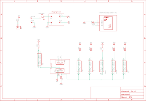
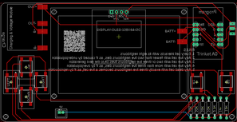
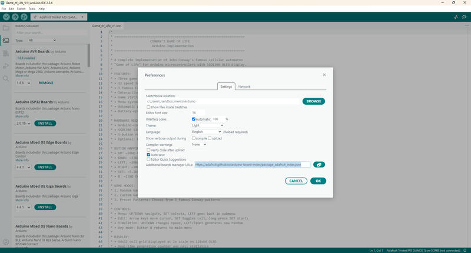
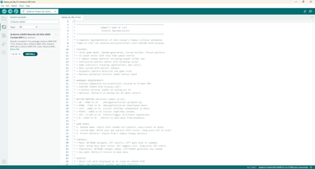
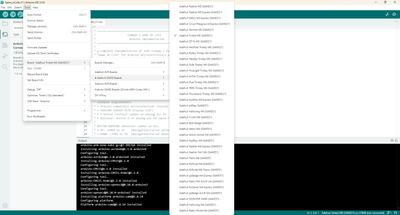
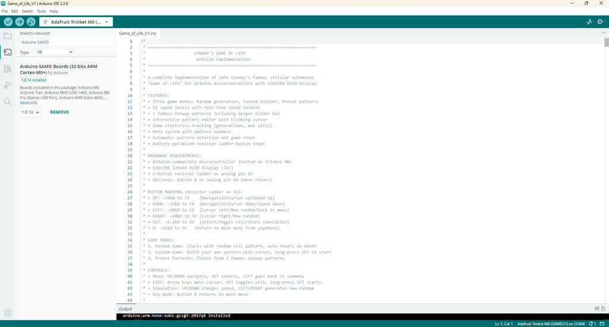

I’ve been fascinated with Conway’s Game of Life ever since I read ‘The Recursive Universe’ way back in 2012.
Since then, I wanted a way that I could play the game just like you would play a Nintendo ‘Game & Watch’ – a pocket-sized version that I could whip out anytime and start to explore & build my own patterns.
Fast-forward to 2025 and that idea has become reality!
Arduino AI Assistant has been a massive help in building the code and there is absolutely no way that I could of done it without AI’s assistance.
If you haven’t used it before and don’t know much about coding, then I strongly recommend that you give it a try.
So, what is Conway’s Game of Life (or GOL for short!). I recently gave the below description in another GOL project which might help those that haven’t heard of it before:
The Game of Life is a cellular automation created by mathematician John Conway.
It's what is known as a zero player game, meaning that its evolution and game play is determined by its initial state and requires no further input.
You interact with the Game of Life by creating an initial configuration and observing how it evolves.
The game itself is based on a few, simple, mathematical rules consisting of a grid of cells that can either live, die or multiply.
When the game is run, the cells can give the illusion that they are alive which is what makes this game so interesting.
Now you know what it is – what does my hand held game version do?
Core Game
Conways 'Game of Life' based on toroidal world: Edges wrap around (top connects to bottom, left to right).
Game includes the following menus:
Alternative Games
Four Alternative cellular automata available to play in the Alt Menu. These include:
Features


I have included a PDF of the parts list with links for all of the parts which you can find on this step in case you want to print it out etc.
The PCB and front panel information can be found on the next step
PARTS:
Adafruit Trinket M0 X 1 - Ali Express
Charging & voltage step-up module X 1 - Ali Express
OLED Screen - 2.42 inch X 1 - Ali Express
Resistors - Ali Express
1K X 1
5.1K X 1
10K X 1
15K X 1
20K X 1
33K X 1
39K X 1
Battery - Ali Express
Tactile Switch - Ali Express
On/Off Switch - Ali Express
M2 Screws - Ali Express
M2 Spacers - Ali Express




We all have different levels of knowledge, so when it comes to a build like this I want to make sure that I'm providing enough information so anyone with some basic soldering skills can make it.
That includes ensuring there are instructions on how to get your own PCB's printed (which is super easy!)
So with that said, the first thing you will need to do is to get the front panel and PCB printed.
I use JLCPCB (not affiliated) to get this done.
The front panel is actually just a PCB without any components included!
The front design is done in a program called Inkscape (available free) and the panel including the drilled holes is done in Fusion 360 (also free!)
The files that you need to build your own Bleep Drum Synth can be found in my GitHub page.
This includes the parts list, Gerber files for the PCB & front panel, schematic, Arduino script etc.
Download the files to your computer
STEPS:


I decided not to directly connect the screen to the PCB.
Instead, I connected the screen to the front panel and added some male header pins to the screen which connect to the PCB via some female headers.
STEPS:


The momentary switches used are SMD ones.
In my first version of this PCB, I had through hole versions but found that there was too mush interference from my fingers touching the connectors when playing the game.
STEPS:


The charging and voltage booster module is a great little board.
It allows you to add say a 3.6V battery like a mobile one, and you can increase the output voltage via a small potentiometer located on the board.
STEPS:


Now you can go ahead and add the rest of the components to the PCB
STEPS:
Now you are ready for testing so lets go and load up the Game of Life code to the Trinket



I went with Adafruit's Trinket M0 as it has plenty of space and capacity to store the code and run the game.
You wouldn’t be able to run this from an Arduino Nano for example.
Plus, the Trinket is small which makes it great for a project like this.
The first thing you will need to do is to set up Arduino IDE to be able to load code to the Trinket M0.
This is straight forward and I have provided a step-by-step guide below.
You can also go to Adafruit’s IDE set-up page as well if you need more info – link can be found here
Install Board Support:
Open the Arduino IDE and go to File > Preferences
Add URLs:
Enter the following URL into the Arduino IDE's preferences to add Adafruit's board repositories and hit 'OK' https://adafruit.github.io/arduino-board-index/package_adafruit_index.json
Here's a short description of each of the Adafruit supplied packages that will be available in the Board Manager when you add the URL:
Install SAMD Boards:
Next go to Tools > Board > Board Manager
In the boards manager, install the latest Arduino SAMD Boards (version 1.6.11 or later)
You can type Arduino SAMD in the top search bar, then when you see the entry, click Install
Restart IDE:
Close and restart the Arduino IDE for the new boards to appear in the Tools > Board menu.
Select Trinket M0 in IDE
Go to Tools > Board > Adafruit SAMD Board and select the Trinket M0 board

Loading the code up is simple now that you have down the previous step of setting up the Trinket on IDE.
STEPS:


If everything is working, then it’s time to connect the front panel and PCB
STEPS:

I’ve used about 13% of the space in the Trinket so there is plenty of room to add some more features to this game.
If you have never coded before (like me!) and would like to contribute to the code, then I would strongly recommend you check out Arduino AI and Claude.
You can add all of the code that I have put together into it and request new features such as the ones below or your own and it’ll take you through how to add it!
It has been a bit of a learning curve, not with the language you need to use, but how and where to add the code suggested by AI.
However, you can ask it to show you exactly and step by step where to add the code and it’ll hold your hand and show you exactly what to do!
Even when something goes wrong and the code doesn’t load, it will find solutions and show you exactly what needs to be updated or changed to get the code to load.
I’d love for this project to become a collaborative one where we could all share our updates and changes to the game and build on what I have started.
If you would like to be a collaborator, then just hit me up with a DM on Instructables or GitHub and I’ll add you as a collaborator to my GitHub page.
Here's some more ideas to implement:
Pattern Management
• Pattern Save/Load: Store custom patterns in EEPROM with names
• Pattern Library: More famous patterns (pulsar, Penta decathlon, etc.) this is a good source for patterns
• Random Seeds: Different randomization algorithms (sparse, dense, clusters) (done)
• Symmetrical Patterns: Generate symmetric starting conditions (done)
Game Modes
• Survival Mode: Try to keep population above threshold for X generations
• Target Mode: Reach specific cell count goals
• Time Challenge: Fastest to stabilization
• Multi-Rule Mode: Different cellular automaton rules (B36/S23, etc.)
Advanced Controls
• Step Mode: Advance one generation at a time with button press
• Rewind: Store last N generations for backward stepping
• Pause/Resume: Freeze simulation mid-run
• Bookmark Positions: Mark interesting generations to return to
Statistics & Analysis
• Population Oscillation Detection: Identify period-N oscillators
• Stability Analysis: Time to stabilization metrics
• High Score System: Longest-lived patterns, highest populations
• Pattern Classification: Auto-detect gliders, oscillators, still lifes
Hardware Enhancements
• Sound Effects: Beeps for births/deaths, musical tones for populations
• Color Coding: Different colors for cell age or generation born


Whilst putting this together, I started to code a Star Wars game that would also work on the handheld game console made in this Instructable.
It's a lot of fun and I was initially inspired from the original Star Wars Arcade game that came out in 1983.
You can find a link here to the GitHub page - just download the code and add it to the Trinket.
Here's a rundown of the game:
Star Wars: Trench Run - A Complete Arcade Experience for Arduino
Overview
Experience the iconic Battle of Yavin in this comprehensive Star Wars arcade game for Arduino!
This game recreates the climactic Death Star assault from A New Hope, featuring multiple training sequences, intense space combat, and the legendary trench run finale.
Button Configuration
Game Stages
Watch the twin suns set over Luke's moisture farm in this atmospheric 8-second opening scene featuring desert landscapes and Luke's iconic dome home.
Objective: Destroy womp rats in Beggar's Canyon using your T-16 Skyhopper
Goal: Score 200 points to complete training
Brief story interlude where Obi-Wan teaches Luke about the Force before lightsaber training.
Objective: Use the Force to deflect training remote blasts
Goal: Score 200 points in this stage (relative scoring)
Reward: +20% health bonus upon completion
Objective: Destroy TIE Fighters approaching the Death Star
Enemy Types:
Goal: Score 500 points to proceed to Death Star approach
Dramatic flyby as the Death Star grows larger on screen, showing its massive scale and the infamous trench.
Objective: Destroy surface towers and gun turrets
Goal: Score 500 points to reach trench entry
5-second dramatic sequence showing your X-wing diving into the Death Star trench with motion lines and speed effects.
Objective: Navigate the narrow trench while destroying turrets
Goal: Score 500 points to reach exhaust port
7-second scene featuring detailed front-view X-wing approaching camera with "USE THE FORCE" message.
Objective: Fire proton torpedoes into the 2-meter exhaust port
Success: Triggers missile shaft sequence
Congratulations screen with final score.
Controls Tips